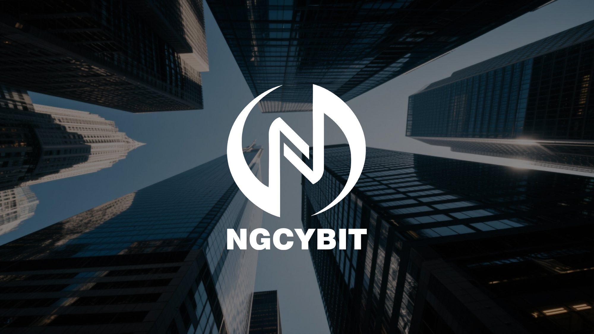
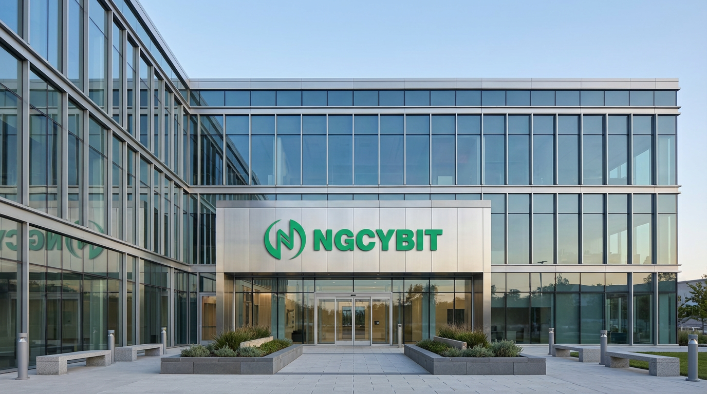
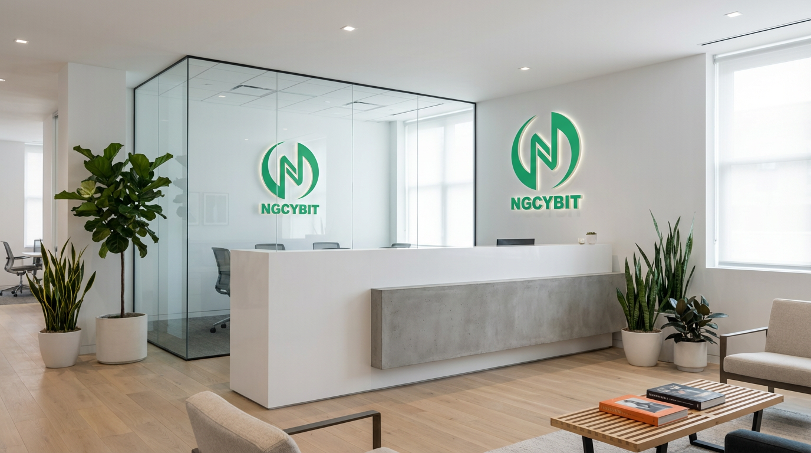

Simple by design
Clean hierarchy and predictable controls reduce friction while preserving the information that matters.
Designed for informed participation
NGCYBIT Exchange brings thoughtful technology, structured market information, and user-centered education into one coherent platform vision.

Useful information belongs where decisions happen.
Why NGCYBIT Exchange
Digital asset participation should begin with comprehension. NGCYBIT Exchange organizes the experience around readable information, consistent interactions, and practical learning so users can evaluate each step with context.
Clean hierarchy and predictable controls reduce friction while preserving the information that matters.
Clear explanations, visible status information, and direct risk communication support better questions.
Performance, monitoring, and resilient architecture are measured through the quality of the user experience.


A disciplined platform vision
NGCYBIT Exchange connects product design with operational thinking. Every interface, educational guide, and technology decision should help users understand where they are, what an action means, and what to review next.
NGCYBIT Exchange Insights
A detailed introduction to the NGCYBIT Exchange vision, its user-centered design principles, technology approach, and place in the evolving digital asset landscape.
Read insightExplore how NGCYBIT Exchange connects clear information, interface design, records, risk communication, and user education in a transparent trading experience.
Read insightLearn how NGCYBIT Exchange frames account protection as a shared practice involving platform controls, user habits, verification, monitoring, and careful recovery.
Read insight